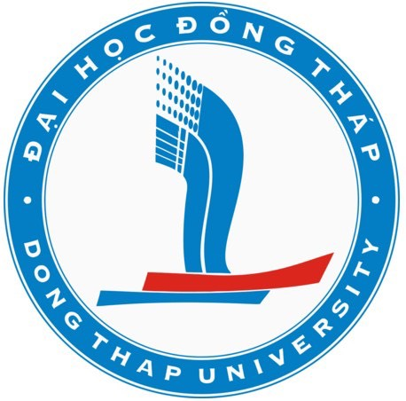

Explore Taichung and Wufeng
Taichung is one of Taiwan’s most vibrant and livable cities, celebrated for its pleasant climate, rich cultural heritage, creative districts, modern architecture, and beautiful natural landscapes. Participants attending SSIM 2026 are encouraged to explore not only downtown Taichung but also the historic and cultural attractions surrounding Chaoyang University of Technology (CYUT) in Wufeng District.
Historic and Cultural Attractions Near CYUT
Wufeng Lin Family Mansion and Garden
One of Taiwan’s most significant national heritage sites, the Wufeng Lin Family Mansion and Garden preserves the legacy of the influential Lin family during the Qing Dynasty. Visitors can admire elegant traditional architecture, historic courtyards, classical gardens, and beautifully restored residences that reflect Taiwan’s rich cultural history.
Official Website:
Recommended Photos
- Main Entrance
- Grand Flower Hall
- Lai Garden
- Traditional Courtyard Architecture
Guangfu New Village
Originally developed as a residential community for government employees in the 1950s, Guangfu New Village has evolved into a vibrant cultural and creative district. The area features cafés, artist studios, craft shops, exhibition spaces, and charming tree-lined streets, making it a popular destination for leisure and photography.
Official Information:
Recommended Photos
- Historic Residential Buildings
- Creative Market Area
- Art Installations
- Village Streetscape
Asia University Museum of Modern Art
Designed by the world-renowned architect Tadao Ando, this iconic museum combines contemporary architecture with modern art exhibitions. Located only a few minutes from CYUT, it is an excellent destination for visitors interested in art, design, and architecture.
Official Website:
Recommended Photos
- Exterior Architecture
- Main Exhibition Hall
- Tadao Ando Design Features
- Museum Plaza
Must-Visit Attractions in Taichung
National Taichung Theater
Designed by Japanese Pritzker Prize-winning architect Toyo Ito, the National Taichung Theater is widely recognized as one of the world’s most remarkable contemporary performing arts venues. Its flowing organic architecture and cultural exhibitions attract visitors from around the globe.
Website:
Recommended Photos
- Exterior View
- Main Lobby
- Sky Garden
- Performance Spaces
National Taiwan Museum of Fine Arts
Taiwan’s largest public art museum showcases modern and contemporary artworks by Taiwanese and international artists. The museum is also known for its expansive sculpture garden and peaceful green surroundings.
Website:
Recommended Photos
- Museum Exterior
- Sculpture Garden
- Main Gallery
- Outdoor Art Installations
Miyahara
Housed in a beautifully restored historic building, Miyahara combines architecture, local culture, desserts, and souvenirs. Its grand interior resembles a classic library and has become one of Taichung’s most photographed landmarks.
Website:
Recommended Photos
- Grand Interior Hall
- Signature Ice Cream
- Historic Exterior
- Gift Shop Displays
Rainbow Village Cultural Park
Famous for its colorful murals painted by the beloved “Grandpa Rainbow,” this artistic village has become an internationally recognized cultural attraction and popular photography destination.
Website:
Recommended Photos
- Rainbow Murals
- Painted Alleys
- Public Art Installations
- Visitor Activities
Gaomei Wetlands
One of Taiwan’s most famous sunset destinations, Gaomei Wetlands offers breathtaking coastal scenery, boardwalk trails, migratory bird watching, and spectacular sunset views over the Taiwan Strait.
Official Information:
Recommended Photos
- Sunset Over Wetlands
- Boardwalk
- Wind Turbines
- Coastal Landscape
Feng Chia Night Market
As one of Taiwan’s largest and most famous night markets, Feng Chia Night Market offers visitors an authentic Taiwanese experience featuring local street food, shopping, and entertainment.
Official Information:
Recommended Photos
- Night Market Entrance
- Street Food Stalls
- Local Snacks
- Evening Crowd Atmosphere
Recommended Half-Day Tours
Route A: Heritage and Culture
- Wufeng Lin Family Mansion and Garden
- Guangfu New Village
- Asia University Museum of Modern Art
- Local Wufeng Cuisine
Route B: Downtown Taichung Experience
- National Taichung Theater
- GNational Taiwan Museum of Fine Arts
- Miyahara
- Feng Chia Night Market
Route C: Nature and Sunset
- Downtown Taichung
- Gaomei Wetlands
- Coastal Sunset Viewing
Conference Venue
Chaoyang University of Technology (CYUT)
Located in Wufeng District, Taichung City, Chaoyang University of Technology provides conference participants with convenient access to both Taiwan’s rich cultural heritage and the modern attractions of central Taiwan.
Website:
Address:
No. 168, Jifeng E. Road, Wufeng District, Taichung 413310, Taiwan
We look forward to welcoming you to Taichung and sharing the unique blend of history, culture, innovation, and hospitality that makes central Taiwan a memorable destination.
